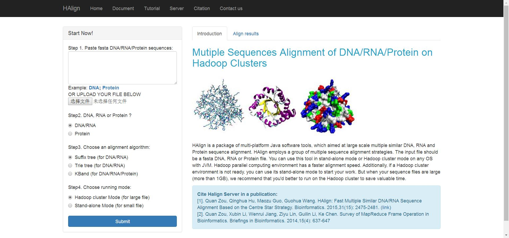
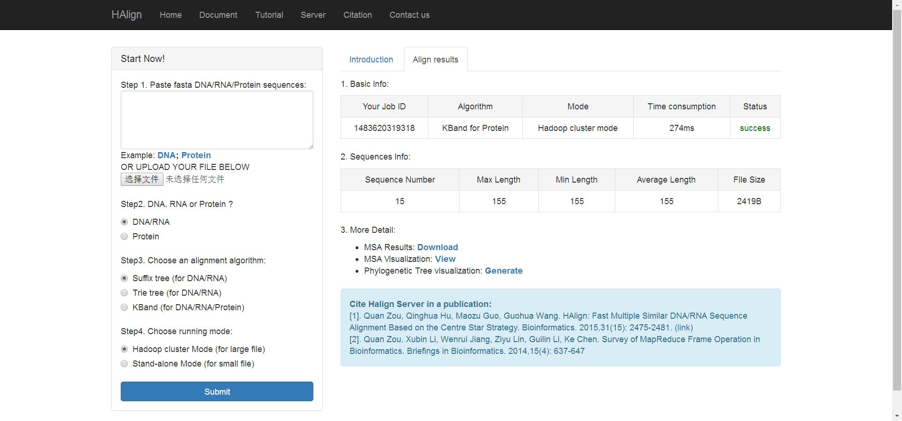
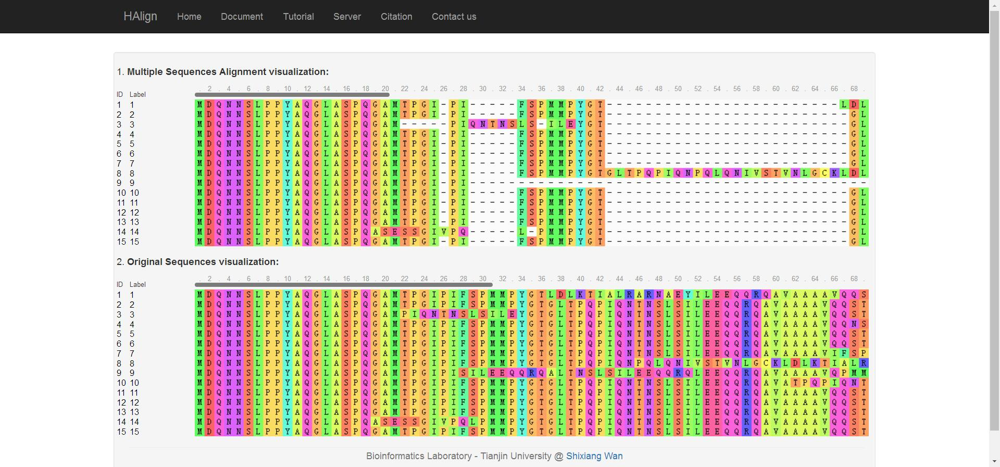
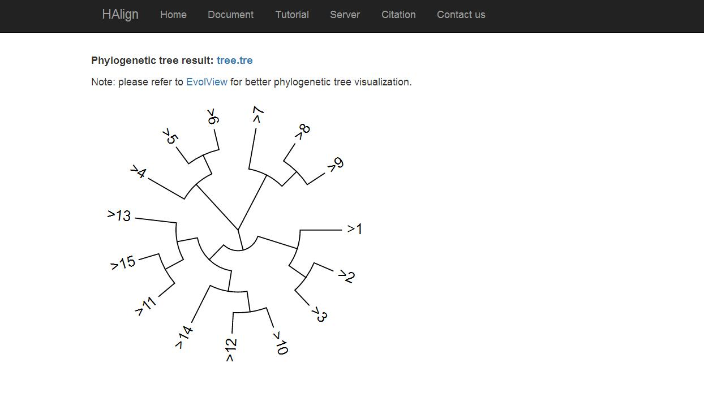

After you click the link as shown in above, you will see the HAlign web server (Fig. 1).
Fig. 1
As you can see, you can start your a series of multiple sequences alignment experiments now. You have two different ways to submit your fasta data, paste or upload directly. By the way, do not worry there are so many redundant line breaks, we will deal with it automatically. Certainly we will do not consider about the illegal characters in your fasta sequences, but we will feedback this to you kindly. Next, after ensuring about your fasta sequences, you need to choose the type of your fasta sequences, DNA/RNA or Protein. When you finish it, we will limit the legal algorithms you can choose, so you just feel free to decide a proper algorithm. Lastly, you should choose a proper running mode: Hadoop cluster Mode or Stand-alone Mode. Easily, just choose the hadoop cluster mode, unless you want to do some comparable experiments.After you submit your experiment task successfully, wait a second, you will see the results (Fig. 2).
Fig. 2
The results includes a series of information: file basic information, sequences information, multiple sequences alignment information and phylogenetic tree information. Based on your Job ID, you can download you alignment result file (save download link: http://cluster.malab.cn/download.do?time=your Job ID), we will save this result file a month for you kindly.Now, you can visit your multiple sequences alignment results visualization by click "View" link in Fig. 2.
Fig. 3
For more convenience comparison between the original sequences and the aligned sequences, we show both of them simultaneously. You can try to drag over one sequence and compare it with other sequences, observe the spaces in results, or maybe you will discover some new knowledge from the original sequences.Now, you can visit your phylogenetic tree visualization by click "Generate" link in Fig. 2.
Fig. 4
As shown in Fig. 4, phylogenetic tree result is free to download. Because this procedure needs some time cost, our program calculate it respectively. For your convenience, we show tree.png meanwhile.Copyright@2016 by Bioinformatics Laboratory, Tianjin University.